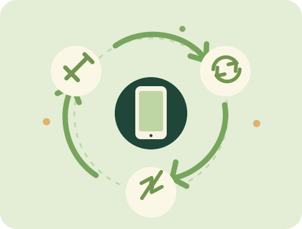

⌂
Rethink
Before buying, ask if you can borrow, share, or choose a durable device that can be repaired.
SMALL STEPS, REAL CHANGE
The most responsible device is often the one you already own. When it is time to move on, choose a safe next step.
Make your pledge →
THE RESPONSIBLE DEVICE ROUTE
Move down this list as needed. Recycling is important, but extending a device's useful life comes first.
Before buying, ask if you can borrow, share, or choose a durable device that can be repaired.
Try a trusted repair service or replace a small part before replacing the whole device.
Pass a working device to someone else, or donate it through a reputable programme.
Find an authorised e-waste collection point. Remove personal data and follow their preparation instructions.
BEFORE YOU HAND IT OVER
YOUR NEXT STEP
Search the map and make a pledge to handle your next device responsibly.